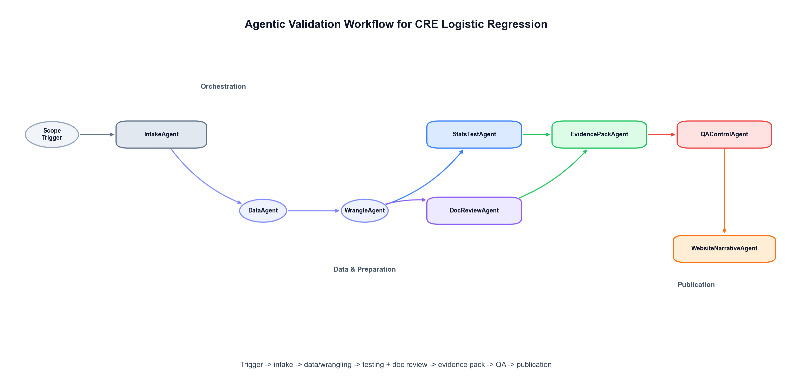
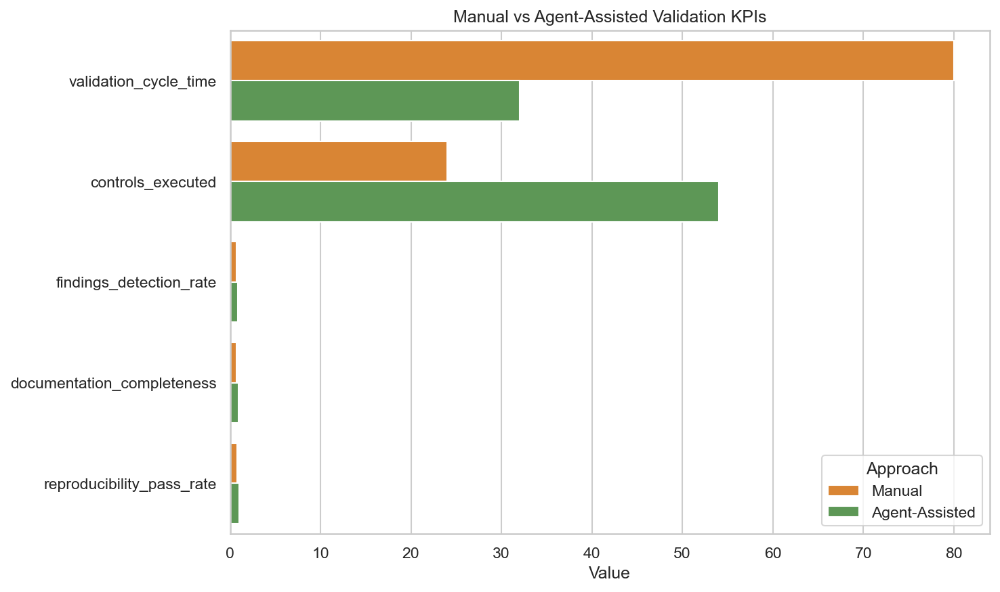

Agentic Model Validation for
CRE Logistic Regression
A full validation lifecycle for a commercial real estate default model,
showing how specialized agents improve speed, consistency, and traceability.
Business Problem
Commercial real estate (CRE) credit models are expected to meet strict model risk management standards while still delivering timely decisions. Traditional validation cycles can be manual, fragmented, and documentation-heavy. This project demonstrates how an agentic workflow can accelerate validation for a logistic regression default model without sacrificing governance rigor.
Model Context
The model is a loan-level logistic regression predicting default_flag using
credit, collateral, and market features such as ltv, dscr,
debt_yield, occupancy_rate, market vacancy, and regional factors.
Validation covers conceptual soundness, data quality, performance testing, stability, and
segment-level fairness diagnostics.
Data Retrieval and Wrangling
A realistic synthetic CRE dataset was generated to emulate production constraints: class imbalance, missingness, outliers, and regime shifts. Agent-driven data pipelines then perform schema checks, imputations, encoding, and deterministic train/validation/test time splits before statistical testing begins.
Validation Framework
- Discrimination: ROC-AUC, KS, Gini
- Calibration: Brier score and grouped calibration checks
- Classification Quality: precision, recall, F1, confusion matrix
- Stability: PSI and temporal performance consistency
- Statistical Significance: Wald and likelihood-ratio testing
- Segment Review: by property type, MSA, and market-cap bucket
Validation Performance Interpretation
The ROC-AUC result indicates weak class separation in this validation run, which is a critical governance signal. From a model risk perspective, this is exactly where human judgment remains essential: a validator should not simply accept automated outputs, but determine whether the observed weakness points to recalibration or a more fundamental model redevelopment decision.
A practical escalation approach is to anchor actions to internal model development standards and approved thresholds. For example, if discrimination is marginal but stability and calibration remain within tolerance, a controlled recalibration may be appropriate. If discrimination, calibration, and segment performance all deteriorate together, that combination is typically evidence for redevelopment rather than incremental tuning.
In other words, agents accelerate testing, evidence collection, and consistency, but do not replace the evaluator's responsibility to challenge results, interpret context, and decide the risk disposition of the model before production use.
Agentic Workflow
The project decomposes validation into specialized agents:
IntakeAgent, DataAgent, WrangleAgent,
StatsTestAgent, DocReviewAgent, EvidencePackAgent,
QAControlAgent, and WebsiteNarrativeAgent. Each agent owns specific
controls and outputs an auditable artifact.
How Agents Speed Up Validation
Manual vs agent-assisted KPI tracking is used to quantify impact. In the benchmark setup, agent-assisted validation reduced cycle time, increased controls executed, improved documentation completeness, and raised reproducibility pass rates. This supports scalable validation in high-volume model inventories.
Governance Implications
The workflow aligns to SR 11-7 principles: conceptual soundness, ongoing monitoring, and outcomes analysis. Agents do not replace independent judgment; they systematize evidence collection and free validators to focus on challenge, interpretation, and risk decisions.
Key Takeaways
- Agentic validation improves throughput while maintaining control discipline.
- Logistic regression remains highly useful when paired with robust validation design.
- Documentation quality and auditability can be engineered as first-class outputs.